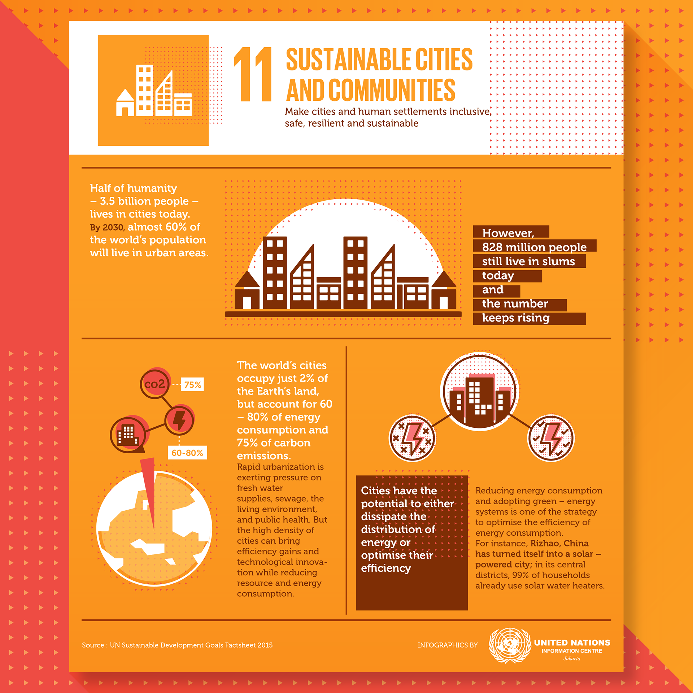
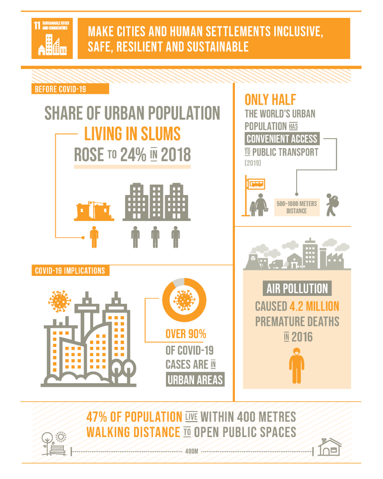
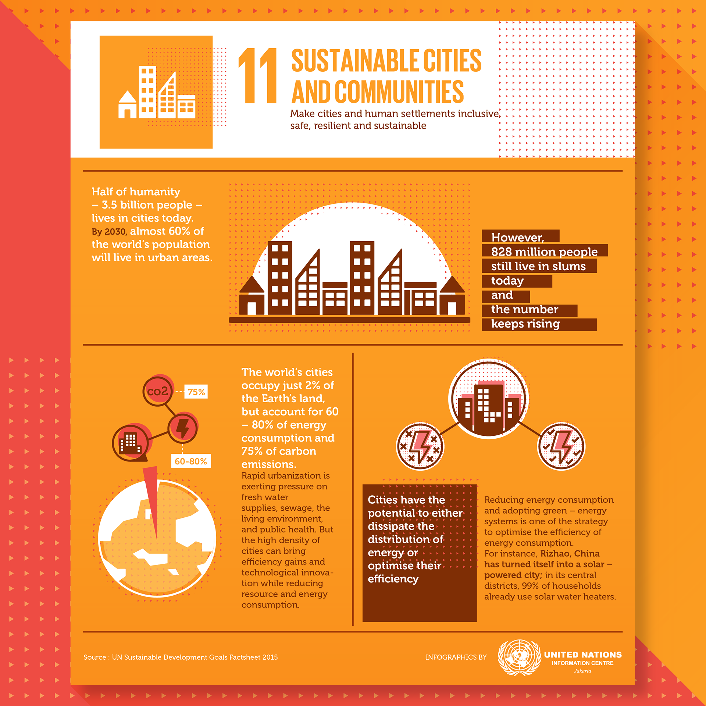
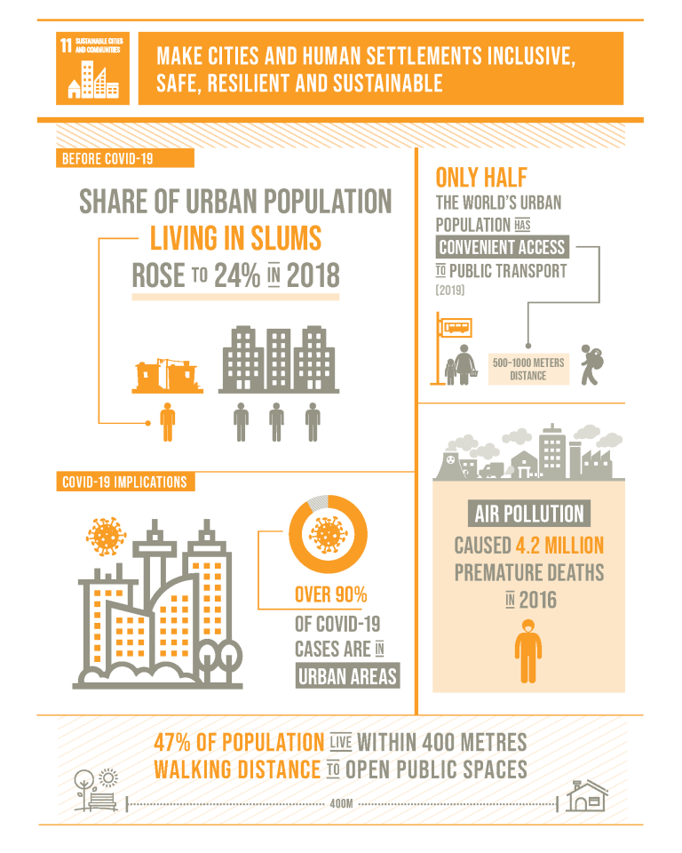

What is Sustainable Development Goal 11?
Goal 11 is about making cities and human settlements inclusive, safe, resilient and sustainable.
A steady growth in the human population is projected to occur in the next 30 years, amounting to approximately 2 billion persons1. This aligns with the trend seen through the last few decades, and with the ever-increasing population, steps must be taken to secure adequate housing for each individual. The 11th Sustainable Development Goal (SDG) tackles precisely this necessity. Its primary target is to make cities and human settlements inclusive, safe, resilient, and sustainable 2. It acknowledges each individual’s fundamental right to secure shelter and envisions realizing this right through 12 different sub-targets to help achieve this larger goal.

 


